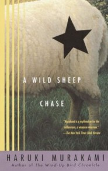

Immensely popular in Japan, the author's first novel to be published here is a comic combination of disparate styles: a mock-hardboiled mystery, a metaphysical speculation and an ironic first-person account of an impossible quest. The narrator is a modern Japanese yuppie: divorced, in a mildly exciting relationship and a much less exciting job as an ad copywriter, he lives unexceptionally until a photograph throws his life into chaos. The snapshot, which he uses to illustrate a newsletter, shows a field of sheep with one unique crossbreed, and the picture is special enough to have attracted the attention of both the nomadic friend who sent it to him and a right-wing Mr. Big who, moribund, wants the source found before he dies. The Boss's henchman, a sleek, scary majordomo, gives the narrator one month to track it down, and the story that ensues is a postmodern detective novel in which dreams, hallucinations and a wild imagination are more important than actual clues. With the help of a fluid, slangy translation, Murakami emerges as a wholly original talent. $30,000 ad/promo; Literary Guild and Doubleday Book Club alternates. (Oct.)